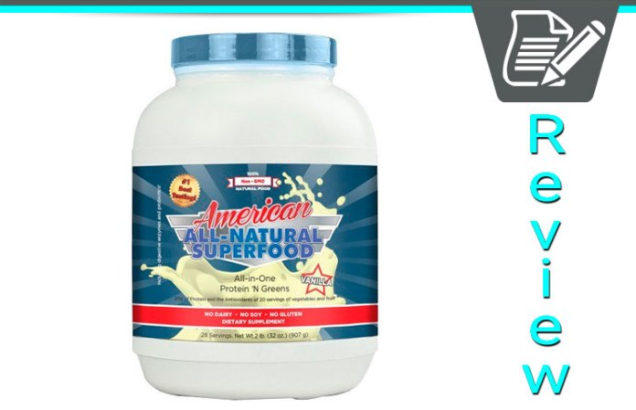
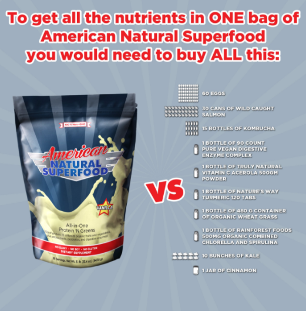
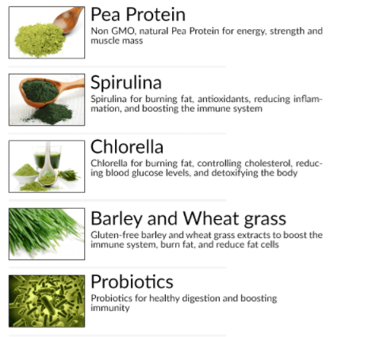
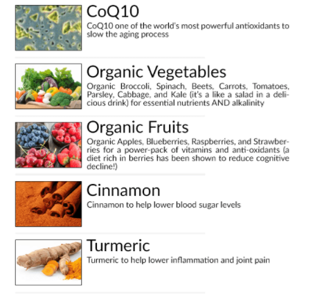
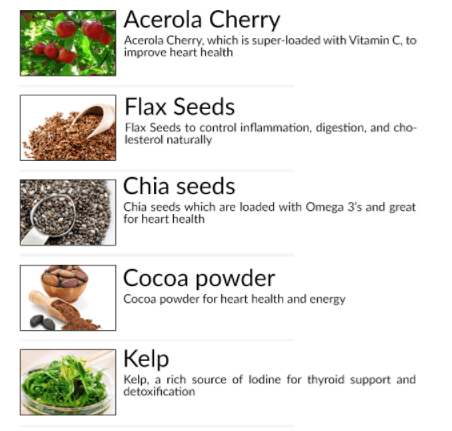
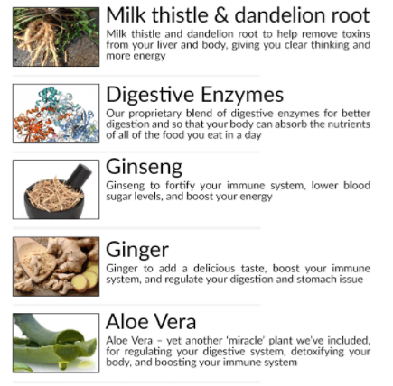

American Natural Superfood Review - Protein and Greens Mix | Does It Really Work?

American All-Natural Superfood
The word ‘superfood’ gets thrown around a lot these days. While it is a sign of positive changes, more and more people are adjusting the way they eat, it has also been misused. There are hundreds of products on the market that claim to be filled with superfoods, but offer no proof to confirm it. And there are even more people claiming to be ‘health experts’ who have made the next miracle superfood mixture.
With the American All-Natural Superfood Diet, there is no worry about what’s inside of the product, because every single ingredient is clearly listed and described. And, unlike so many other superfood options on the market, this diet was actually created with the help of an actual medical doctor. These two facts are only two reasons why American All-Natural Superfood Diet is the perfect option for those trying to gain control of their health.
Already Decided?
That's great! Click the button on your right and take the action now.
What is the American All-Natural Superfood?
American All-Natural Superfood is a green drink powder that is considered one of the most effective diet systems for weight loss. By combining a host of superfoods, fruits, vegetables, and supplements, American All-Natural Superfood Diet provides users with energy, all while helping them lose weight.
While American All-Natural Superfood Diet started out as a way to lose weight and regain a youthful energy, it has several other beneficial side effects that have made it one of the most popular green drinks on the market. Not only does American All-Natural Superfood Diet help with cardiovascular health, it also keeps cholesterol and blood sugar at healthy levels. It also works as an immune booster.
What makes the American All-Natural Superfood Diet so great is that it is extremely easy to make and also very filling, so replacing a meal with a serving of the drink isn’t hard. The American All-Natural Superfood Diet is the perfect option for those who want to regain their energy, health, mental clarity, and lose a few pounds.
Who Should Use American All-Natural Superfood?
While American All-Natural Superfood is great for anyone who truly cares about their health, it was designed to specifically help those who struggled with a few particular issues.
American All-Natural Superfood is perfect for those who are overweight, specifically if they carry a lot of stubborn fat around the belly. For those who want to protect their heart and keep their blood sugar and cholesterol at healthy levels, this is the perfect green drink.
Potential users are also those who have circulation problems, suffer from fatigue, or often find themselves confused or mentally foggy. American All-Natural Superfood is also a great option for those who are trying to be healthy, but have found they can’t afford the costs of all the foods they need to maintain this lifestyle. This is also for those who just want to take control of their health, whether it’s for personal, financial, or familial reasons.

What Makes American All-Natural Superfood Special?
As mentioned above, on the biggest reasons the American All-Natural Superfood Diet is set so far apart from other green drink diets is that it was designed and created by a medical doctor. Not only was it formulated by a doctor, but American All-Natural Superfood was created through extensive research.
However, the one thing that sets American All-Natural Superfood on a completely different level than its competitors is that the green drink contains high levels of vitamin B6. This vitamin plays an essential part in keeping the metabolism running at healthy speeds. The problem with B6 is that, although the body produces, as the body ages, it begins to produce less and less. This means the only way to keep B6 levels in the body is to add it.
Vitamin B6 also plays a crucial role in cognitive function, keeping the brain sharp and focused, while also aiding memory. It also helps protect the immune system and keeps the red blood cells in the body run at optimum.
However, the key to the importance of vitamin B6 is that it helps the digestive system break down food faster. While this is definitely a benefit for the digestive system, food breaking down faster also results in higher levels of fat loss.
Not only does vitamin B6 help break apart food, it specifically helps break down protein, which is vital for the body to function. Protein doesn’t just help the body build and repair muscle, it also helps cuts and wounds heal faster. It keeps bones strong and keeps the brain sharp. But protein can’t be digested if there isn’t enough B6 in the body, so these two crucial substances depend on each other.
American All-Natural Superfood contains 21 natural ingredients that are packed full of vitamin B6 and also contains 40% of the daily recommended value of protein, a fact that makes it one of the most effective green drinks on the market.
What is in American All-Natural Superfood?
As mentioned earlier, one of the issues with other green drinks is that they aren’t clear about what ingredients they contain. This is not the case with American All-Natural Superfood. Not only does this green drink list its ingredients, it also clearly states the benefits of each ingredient.
The ingredients in American All-Natural Superfood are:
   
Purchasing American All-Natural Superfood
American All-Natural Superfood can be purchased on the Healthy Living Association website. It is currently being offer for $59, for two pounds of the green powder.
What Are You Waiting For?
Your Purchase is Backed Up by 30 Days Money Back Guarantee. If You Don't Like The Product, Give It Back And You Will Be Refunded With No Questions Asked!
The purchase of American All-Natural Superfood comes with a free superfood shaker, a free eBook on natural herbal home remedies, and a free eBook on detoxifying the body.
American All-Natural Superfood comes with a one year, 100% money back guarantee. If within a year of purchasing American All-Natural Superfood, customers find they aren’t getting the results they want or they are unhappy with the product, they can return it and get a full refund, no questions asked.
Related Post
QUIT SMOKING MAGIC REVIEW
 Addiction/
Addiction/
ALCOHOL FREE FOREVER - HOW TO QUIT DRINKING TODAY FROM THE PRIVACY OF YOUR HOME

Recent Post
Bow Legs No More - Looking for a Permanent Remedy for Bow Legs Without the Need for Surgery?
 Denatal Health/
Denatal Health/
Dentist Be Damned How To Get Rid Of Toothache Review - Does It Really Work?
 Dental Health/
Dental Health/
Tooth Defender 100% Natural Oral Care Review - Does It Really Work?
 Beauty/
Beauty/
Skin Whitening Forever - How To Whiten Your Skin Naturally